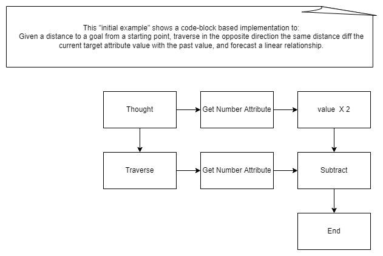

design choices for Andrew's thought processing language
background/introduction
For a language that can be mutated, should Andrew go with a text-based language or with a block-based language. To help address this, the following initial example was generated.
Initial example: Given a distance to a goal from a starting point, traverse in the opposite direction the same distance diff the current target attribute value with the past value, and forcast a linear relationship.
possible approaches
code-based representation of initial example
forcastValue = (2 * Node($startNode).getNumberAttr($targetAttr)) - (traverse($startNode, $relname, $direction, $distance).getNumberAttr($targetAttr))
block-based representation of initial example

[Note: Source of graphic is here.]
conclusions
Given a choice of representation, choice was made to be a code-block based language over an ANTLR type language.